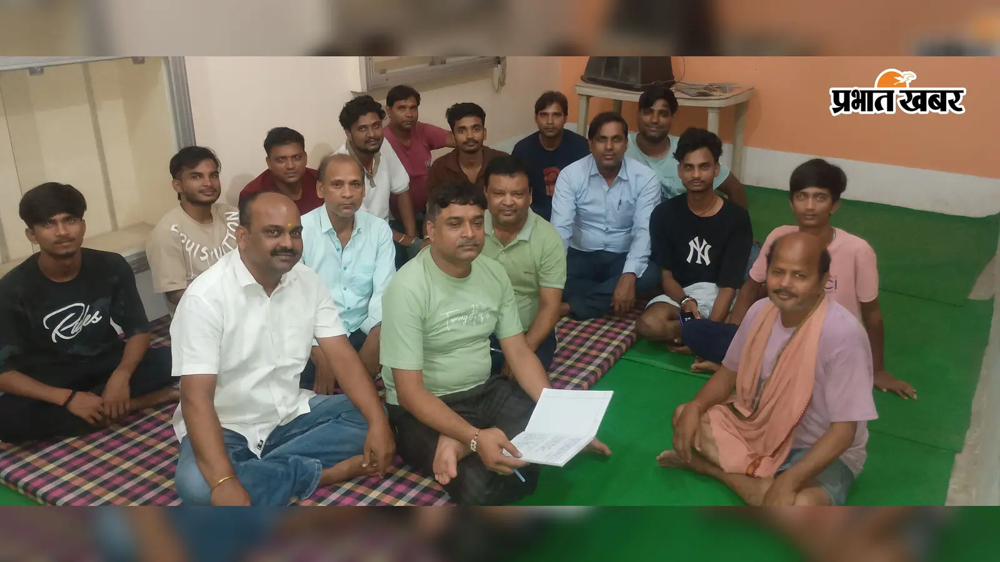

नासरीगंज में दुर्गापूजा कमेटी की बैठक संपन्न, डॉ. प्रेम कुमार बने नए अध्यक्ष

नासरीगंज। नगर के बड़ी बाजार रोड स्थित एक निजी भवन में श्री श्री बड़ी देवी दुर्गा पूजा स्थान कमेटी की आम बैठक आयोजित की गई। बैठक की अध्यक्षता सूरज कुमार ने की। इस दौरान नई कार्यकारिणी के गठन के साथ आगामी दुर्गापूजा की तैयारियों और अन्य महत्वपूर्ण विषयों पर विस्तार से चर्चा की गई।
बैठक के दौरान सर्वसम्मति से डॉ. प्रेम कुमार को समिति का नया अध्यक्ष चुना गया। वहीं सूरज कुमार को सचिव, रवि कुमार गुप्ता एवं पिंटू राज को उपसचिव तथा नितेश कुमार एवं आशुतोष कुमार को कोषाध्यक्ष बनाया गया।
वहीं अजय कुमार गुप्ता को लाइसेंसधारी तथा बंटी राज एवं आदित्य राज को उपाध्यक्ष की जिम्मेदारी सौंपी गई।
संरक्षक मंडल के अध्यक्ष के रूप में डॉ. अमरेंद्र कुमार और उपाध्यक्ष के रूप में भारतेंदु नारायण का चयन किया गया।
युवा कार्यकारिणी में तुषार राज को युवा अध्यक्ष, अभिनव भास्कर को युवा उपाध्यक्ष तथा निहाल कुमार को युवा सचिव चुना गया।
समिति के सदस्यों के रूप में अमित चंद्रवंशी, रमेश कुमार, जितेंद्र कुमार बाबू, अधिप राज, मनीष कुमार, आदित्य राज, शैन राज, समीर कुमार, रितु राज (बंटी), विकास कुमार, अमन कुमार, संदीप राज, आदित्य भास्कर, प्रिंस साहू, शुभम कुमार एवं प्रिंस कुमार सहित अन्य लोगों को शामिल किया गया।
बैठक में आगामी दुर्गापूजा को व्यवस्थित एवं भव्य तरीके से आयोजित करने को लेकर विभिन्न तैयारियों पर चर्चा हुई। समिति के सदस्यों ने पूजा के दौरान श्रद्धालुओं की सुविधा, सुरक्षा और आवश्यक व्यवस्थाओं को बेहतर बनाने के लिए आपसी सहयोग और समन्वय के साथ कार्य करने पर जोर दिया।
समिति के पदाधिकारियों ने कहा कि पूजा को सफल और व्यवस्थित बनाने के लिए सभी सदस्य मिलकर अपनी जिम्मेदारियों का निर्वहन करेंगे तथा श्रद्धालुओं को बेहतर सुविधाएं उपलब्ध कराने का प्रयास किया जाएगा।